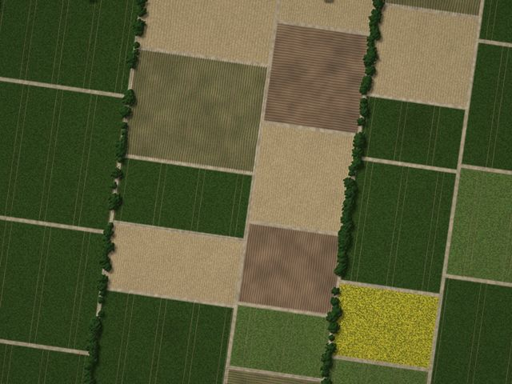
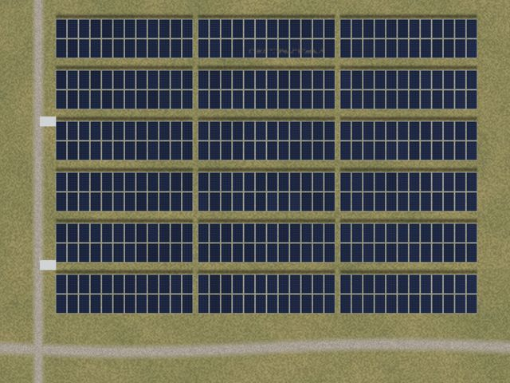
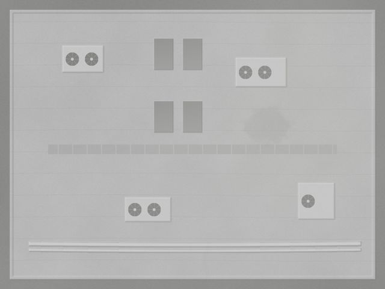
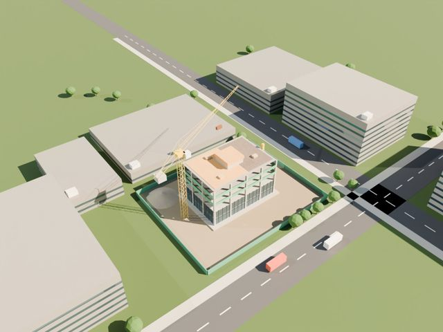
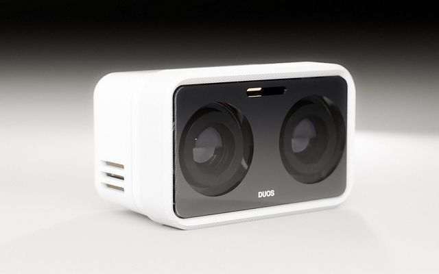
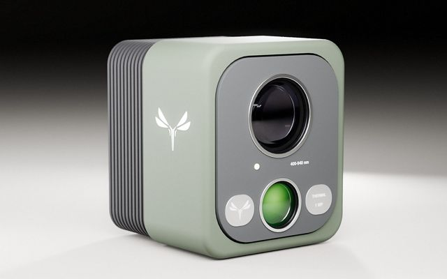
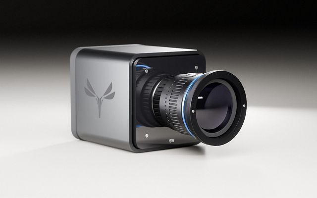
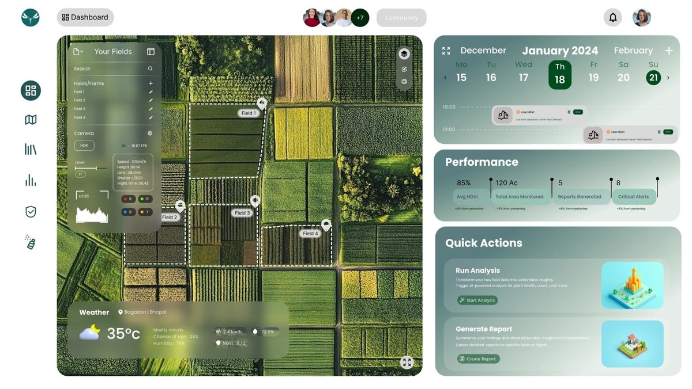

Every field is already telling you where it hurts.
Most of it is written in light your eyes can't see.
Aviac reads it, and shows you where to act.
Light carries the answer.
A leaf reflects near infrared long before it changes colour. Aviac sensors read red edge and NIR from the air, and the software turns them into the rows to scout, spray or water first.
Made in India
One platform. Five ways to win.
Same drone, same dashboard, a different band for each job. Pick a market to see what the camera finds.


Visible NDVI 2 stressed zones · 0.29 ac flaggedStress shows in the red edge and near infrared days before it shows in colour. Scout the patch, not the farm.Explore crop monitoring Visible
Coverage
1 missed strip · 1 overlapA camera at the back of the sprayer logs every pass and flags missed strips and overlaps before the drone lands.Explore spraying
Visible
Coverage
1 missed strip · 1 overlapA camera at the back of the sprayer logs every pass and flags missed strips and overlaps before the drone lands.Explore spraying


Visible Thermal 5 hotspot candidates in one passHotspot candidates become reviewed findings, repair jobs and a report the site owner signs off.Explore solar inspection

Visible SWIR Ponding · wet insulation · pipe leakWet insulation, ponding and leaks read dark in short-wave infrared, and haze mostly drops away.Explore industrial inspection

Week 3 Week 11 +9 floors of frame · glazed to level 8The same flight every week: what was built, what moved and how much material is left.Explore construction monitoringThe systems.
One family of sealed heads. Every lens sits under one sheet of glass, behind a rubber rim that takes the hit in a hard landing.

MS Agri Spectral
Six bands, fixed nadir under the wing.

Duos Stereo
Two global shutters, 26 mm apart, behind the sprayer.

TH Thermal + NIRDEMO
1 MP thermal and a Mira220 NIR module, 400–940 nm.

SWIRL SWIRDEMO
InGaAs short-wave infrared for water and haze.
Every system is quoted for your drone and quantity. Tell us what you fly and we will send a price.
Request a quoteOn the aircraft.
Mounted for the job: MS fixed under the survey wing, looking straight down; Duos on a gimbal behind the sprayer, watching the spray.
Fixed, looking straight down.
Bolted to the VTOL belly on four rubber isolators, lenses straight down. A fixed nadir mount keeps every band registered, flight after flight.
On a yoke, facing aft.
A two-axis gimbal at the rear holds the stereo pair level and aimed at the boom, catching coverage, drift and missed rows.
In the field.
Every flight lands in the Aviac dashboard: field maps, index layers, findings, alerts and reports, ready to act on.

Partners.
Built with engineers and agronomists, tested on working farms.
"We built the camera we wanted on our own fields: one that sees the problem early and tells you where to act."
Shashank, Founder
Questions.
Short answers to what operators and buyers ask before a pilot.
Which drones do the cameras fit?
MS sits on a fixed, isolated hanger under a survey VTOL, lenses straight down. Duos rides a two-axis gimbal at the back of a spray drone, aimed at the boom. Tell us what you fly and we quote for that aircraft.
What does a camera cost?
Every system is quoted for your drone and quantity. Send the aircraft, how many you need and where you fly, and we will reply with a price.
Are TH and SWIRL available today?
TH (thermal and NIR) and SWIRL (short-wave infrared) are demo units today. Ask us about a pilot on your site.
Where does the data go after a flight?
Processing starts on board the camera. Every flight then lands in the Aviac dashboard: field maps, index layers, findings, alerts and reports.
Does the software diagnose problems on its own?
No. It flags candidates and shows where to look. For solar and electrical work, a qualified reviewer confirms each finding before it becomes a repair job.
How do I start a pilot?
Fill in the form below with the job, the site or acreage, and the drone you fly. We reply within two working days.
Fly it on your site.
We are lining up pilots now. Tell us the job, the site or acreage, and the drone you fly.